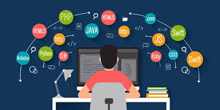

História das linguagens de programação
Linguagem de programação

Uma linha do tempo
As primeiras linguagens de programação conhecidas eram códigos de máquina complicados que eram inseridos manualmente nas primeiras máquinas de computação. Como você descobrirá,a programação de computadores desenvolveu-se rapidamente de códigos de máquina para códigos legíveis por humanos totalmente automatizados.Algumas unidades de programação
1843 Ada Lovelace inventa o primeiro algoritmo de máquina para a máquina de diferenças de Charles Babbage, que estabelece as bases para todas as linguagens de programação.
1944 Em algum lugar entre 1944-45, Konrad Zuse desenvolveu a primeira linguagem de programação ‘real’ chamada Plankalkül (Plan Calculus). A linguagem do Zeus (entre outras coisas) permitia a criação de procedimentos, que armazenavam pedaços de código que podiam ser apresentados repetidamente para executar operações de rotina.
1949 A linguagem Assembly foi usada na calculadora automática de armazenamento de atraso eletrônico (EDSAC). A linguagem Assembly era um tipo de linguagem de programação de baixo nível que simplificava a linguagem do código de máquina.
Shortcode (ou código de ordem curta), foi a primeira linguagem de alto nível (HLL) sugerida por John McCauley em 1949.
Shortcode (ou código de ordem curta), foi a primeira linguagem de alto nível (HLL) sugerida por John McCauley em 1949.
1952 Autocode era um termo geral usado para uma família de linguagens de programação. Desenvolvido pela primeira vez por Alick Glennie para o computador Mark 1 na Universidade de Manchester.O Autocode foi usado nas primeiras máquinas de computação Ferranti Pegasus e Sirius, além do Mark 1.
1957 FORmula TRANslation ou FORTRAN foi criada por John Backus é considerada a linguagem de programação mais antiga em uso atualmente. A linguagem de programação foi criada para cálculos científicos, matemáticos e estatísticos de alto nível.
1958A linguagem algorítmica ou ALGOL foi criada por um comitê conjunto de cientistas da computação americanos e europeus. ALGOL serviu como ponto de partida para o desenvolvimento de algumas das linguagens de programação mais importantes, incluindo Pascal, C, C++ e Java.
1959 Common Business Oriented Language (COBOL), é a linguagem de programação por trás de muitos processadores de cartão de crédito, caixas eletrônicos e etc.Enfim o desenvolvimento da linguagem foi liderado pela Dra. Grace Murray Hopper e foi projetada para rodar em todas as marcas e tipos de computadores. O COBOL ainda é usado até hoje principalmente para sistemas bancários e de gamificação.
1964 Beginners All-Purpose Symbolic Instruction Code ou BASIC foi desenvolvido por um grupo de estudantes do Dartmouth College. A linguagem foi escrita para alunos que não tinham um forte conhecimento de matemática ou computadores. A linguagem foi desenvolvida pelos fundadores da Microsoft, Bill Gates e Paul Allen, e se tornou o primeiro produto comercializável da empresa.
1970 Nomeado após o matemático francês Blaise Pascal, Niklaus Wirth desenvolveu a linguagem de programação em sua homenagem. Foi desenvolvido como uma ferramenta de aprendizado para programação de computadores, o que significava que era fácil de aprender.
1972Desenvolvido no Xerox Palo Alto Research Center por Alan Kay, Adele Goldberg e Dan Ingalls, o Smalltalk permitiu que os programadores de computador modificassem o código em tempo real.
1980Ada foi originalmente projetada por uma equipe liderada por Jean Ichbiah da CUU Honeywell Bull sob contrato com o Departamento de Defesa dos Estados Unidos. Nomeada em homenagem à matemática de meados do século XIX Ada Lovelace, Ada é uma linguagem de programação de alto nível estruturada, estaticamente tipada, imperativa, de amplo espectro e orientada a objetos.
1987Perl foi criado por Larry Wall e é uma linguagem de programação de alto nível e de uso geral.
CuriosidadeE assim foi criador outras 13 linguagens de programação ,exemplos dela poderia ser Python,Java,JavaScript entre outras.
Se quiser saber mais sobre as linguagens de programação, Clique Aqui